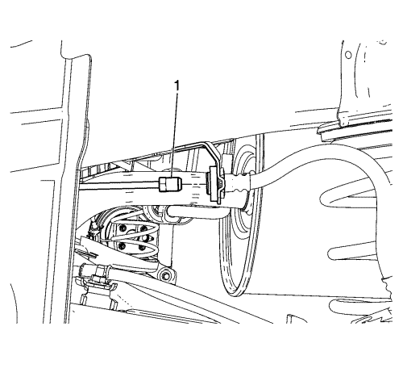
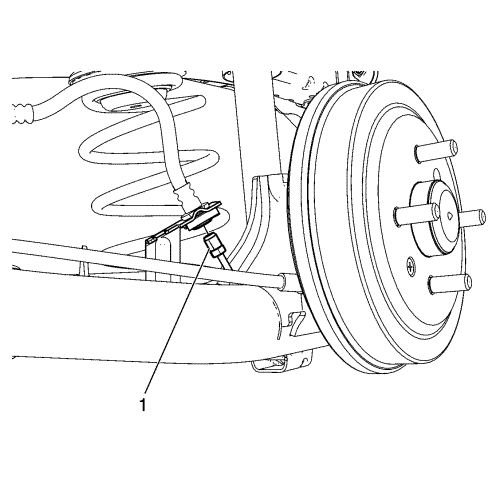
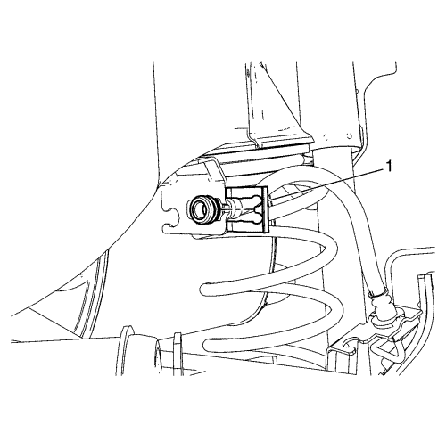
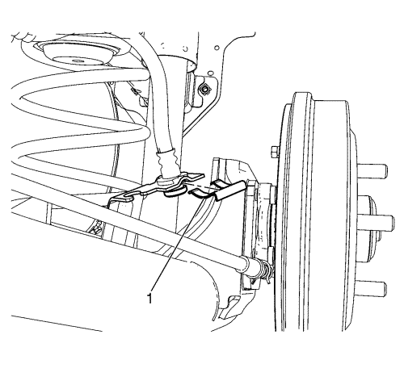

Sustitución del tubo flexible del freno trasero
Procedimiento de desmontaje
Advertencia : Consulte Advertencia de líquido de frenos irritante en la sección Prólogo
Atención: Consulte Advertencia sobre los efectos del líquido de frenos sobre la pintura y los componentes eléctricos en la sección Prólogo
- Elevar el vehículo y soportarlo de manera segura. Consultar Elevación del vehículo con un gato .
- Desmonte la rueda del vehículo. Consultar Desmontaje y montaje de la rueda y el neumático .
- Limpie los extremos del latiguillo de freno y los racores de la tubería de freno para eliminar toda la suciedad y las materias extrañas.

- Desconecte el racor de la tubería de freno (1), del latiguillo de freno situado en el lado de la tubería del freno trasero.
Tape o tapone el extremo del racor de la tubería de freno, para evitar la pérdida de líquido de frenos y la contaminación.

- Desconecte el racor de la tubería de freno (2), del latiguillo de freno situado en el lado del cilindro de rueda.
Tape o tapone el extremo del racor de la tubería de freno, para evitar la pérdida de líquido de frenos y la contaminación.

- Desmonte el clip de sujeción del latiguillo de freno (1), del soporte de fijación del latiguillo de freno situado en el bastidor de la carrocería.
- Suelte el latiguillo de freno, de su soporte de fijación.

- Desmonte el clip de sujeción del latiguillo de freno (1), del soporte de fijación del latiguillo de freno situado en el eje trasero.
- Desmonte el latiguillo de freno, de su soporte de fijación.
Procedimiento de montaje
- Monte el latiguillo de freno en el soporte de fijación situado en el eje trasero.
- Monte el clip de sujeción del latiguillo de freno (1) en el racor del latiguillo situado en el soporte de fijación del latiguillo de freno.
- Monte el latiguillo de freno en el soporte de fijación situado en el bastidor de la carrocería.
- Monte el clip de sujeción del latiguillo de freno (1) en el racor del latiguillo situado en el soporte de fijación del latiguillo de freno.
Atención: Consulte Precaución con las fijaciones en la sección Prólogo
- Conecte el racor de la tubería de freno (1) al latiguillo de freno situado en el lado del cilindro de rueda, y apriételo a 18 N·m (13 lb pie).
- Conecte el racor de la tubería de freno (1) al latiguillo de freno situado en el lado de la tubería del freno trasero, y apriételo a 18 N·m (13 lb pie).
- Purgue el sistema de sistema de frenos hidráulicos. Consultar
Purga de aire del sistema de frenos hidráulicos : Presión → Manual .
- Monte el conjunto de neumático y llanta. Consultar Desmontaje y montaje de la rueda y el neumático .
- Bajar el vehículo.
| © Copyright Chevrolet Europe. All rights reserved |